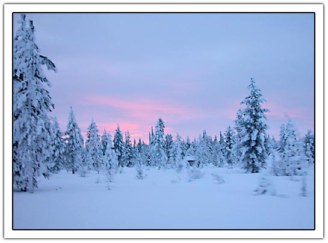
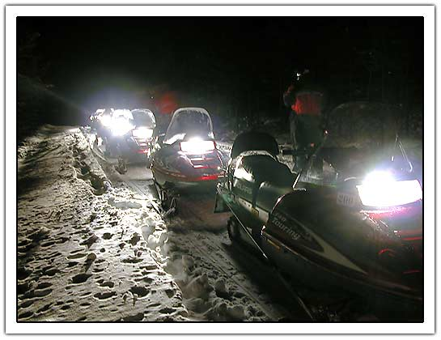
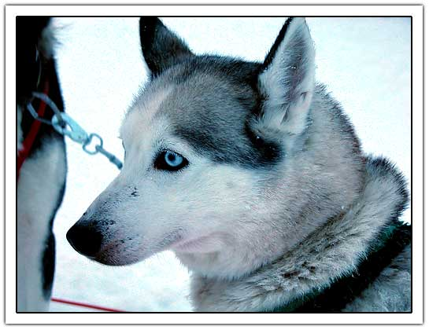
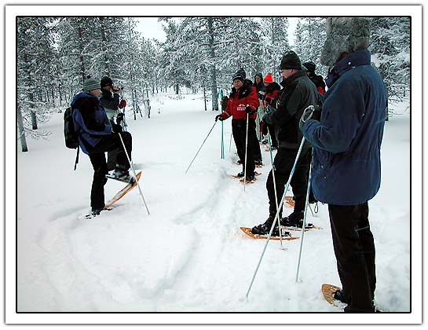

Last weekend...
January 16, 2004 | Comments (0)
We were over here:

The COAS Polar Experience 2004
First day we started from the airport at Ivalo by snowmobile to Saariselka. A group of 20 people in total (including guides). Around 19:30 we drove for two and half hours and had a little pause near a fire. 
The second day we drove huskies. These dogs do only one thing and that is: RUN, RUN, RUN…  We added two expressions to our vocabulary:
- Smell like a husky
- Run like a husky
Third day we had a nice show-shoe walk. The nice thing was that you were alone in nature witohut the smell and sound of snow modiles and huskies. 
I will add the last two days later…
“Those are my principles. If you don't like them I have others.” — Groucho Marx (1895-1977)
Copyright © 2003-2007 Janco Tanis. All rights reserved.
XHTML, CSS, RSS feeds. Powered by Movable Type. Hosted @Home with a domain by hostway.
XHTML, CSS, RSS feeds. Powered by Movable Type. Hosted @Home with a domain by hostway.
Comments
All raw material can be found here: http://jancology.com/share/saariselka/.
A teaser of the DVD can be found here (for the time being)COAS Polar Experience Teaser, thanks to arjen
Interesting blog, does this site get lots of activity or is it usually slow around here?
Ciao